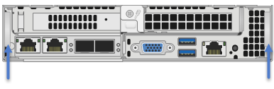

Replace H410S nodes
Contributors
You should replace a storage node in the event of dual inline memory module (DIMM) failure, CPU failure, Radian card problems, other motherboard issues, or if it does not power on. Alarms in the VMware vSphere Web Client alert you when a storage node is faulty. You should use the NetApp Element software UI to get the serial number (service tag) of the failed node. You need this information to locate the failed node in the chassis.
-
You have determined that the storage node needs to be replaced.
-
You have a replacement storage node.
-
You have an electrostatic discharge (ESD) wristband, or you have taken other antistatic precautions.
-
You have labeled each cable that is connected to the storage node.
The replacement procedure applies to H410S storage nodes in a two rack unit (2U), four-node NetApp HCI chassis.
Here is the rear view of a four-node chassis with H410S nodes:
Here is the front view of a four-node chassis with H410S nodes, showing the bays that correspond to each node:
Here is a high-level overview of the steps in this procedure:
Prepare to replace the storage node
Replace the storage node in the chassis
Add the storage node to the cluster
Prepare to replace the storage node
You should remove the faulty storage node correctly from the cluster before you install the replacement node. You can do this without causing any service interruption. You should obtain the serial number of the failed storage node from the Element UI and match it with the serial number on the sticker at the back of the node.

|
In the case of component failures where the node is still online and functioning, for example, a dual inline memory module (DIMM) failure, you should remove the drives from the cluster before you remove the failed node. |
-
If you have a DIMM failure, remove the drives associated with the node you are going to replace from the cluster. You can use either the NetApp Element software UI or the NetApp Element Management extension point in Element plug-in for vCenter server before you remove the node.
-
Remove the nodes using either the NetApp Element software UI or the NetApp Element Management extension point in Element plug-in for vCenter server:
Option Steps Using the Element UI
-
From the Element UI, select Cluster > Nodes.
-
Note the serial number (service tag) of the faulty node.
You need this information to match it with the serial number on the sticker at the back of the node. -
After you note the serial number, remove the node from the cluster as follows:
-
Select Actions for the node you want to remove.
-
Select Remove.
You can now physically remove the node from the chassis.
Using the Element plug-in for vCenter server UI
-
From the NetApp Element Management extension point of the vSphere Web Client, select NetApp Element Management > Cluster.
-
Select the Nodes sub-tab.
-
From Active view, select the check box for each node you want to remove, select Actions > Remove.
-
Confirm the action.
Any nodes removed from a cluster appear in the list of Pending nodes.
-
Replace the storage node in the chassis
You should install the replacement node in the same slot in the chassis from which you remove the faulty node. You should use the serial number you noted down from the UI and match it with the serial number at the back of the node.
|
|
Ensure that you have antistatic protection before you perform the steps here. |
-
Unpack the new storage node, and set it on a level surface near the chassis.
Keep the packaging material for when you return the failed node to NetApp. -
Label each cable that is inserted at the back of the storage node that you want to remove.
After you install the new storage node, you must insert the cables into the original ports. -
Disconnect all the cables from the storage node.
-
Pull down the cam handle on the right side of the node, and pull the node out using both the cam handles.
The cam handle that you should pull down has an arrow on it to indicate the direction in which it moves. The other cam handle does not move and is there to help you pull the node out.
Support the node with both your hands when you pull it out of the chassis.  -
Place the node on a level surface.
-
Install the replacement node.
-
Push the node in until you hear a click.

Ensure that you do not use excessive force when sliding the node into the chassis. -
Reconnect the cables to the ports from which you originally disconnected them.
The labels you had attached to the cables when you disconnected them help guide you.
If the airflow vents at the rear of the chassis are blocked by cables or labels, it can lead to premature component failures due to overheating.
Do not force the cables into the ports; you might damage the cables, ports, or both.
Ensure that the replacement node is cabled in the same way as the other nodes in the chassis. -
Press the button at the front of the node to power it on.
Add the storage node to the cluster
You should add the storage node back to the cluster. The steps vary depending on the version of NetApp HCI you are running.
-
You have free and unused IPv4 addresses on the same network segment as existing nodes (each new node must be installed on the same network as existing nodes of its type).
-
You have one of the following types of SolidFire storage cluster accounts:
-
The native Administrator account that was created during initial deployment
-
A custom user account with Cluster Admin, Drives, Volumes, and Nodes permissions
-
-
You have cabled and powered on the new node.
-
You have the management IPv4 address of an already installed storage node. You can find the IP address in the NetApp Element Management > Cluster > Nodes tab of the NetApp Element Plug-in for vCenter Server.
-
You have ensured that the new node uses the same network topology and cabling as the existing storage clusters.
Ensure that storage capacity is split evenly across all chassis for the best reliability.
NetApp HCI 1.6P1 and later
You can use NetApp Hybrid Cloud Control only if your NetApp HCI installation runs on version 1.6P1 or later.
-
Open a web browser and browse to the IP address of the management node. For example:
https://<ManagementNodeIP>/manager/login -
Log in to NetApp Hybrid Cloud Control by providing the NetApp HCI storage cluster administrator credentials.
-
In the Expand Installation pane, select Expand.
-
Log in to the NetApp Deployment Engine by providing the NetApp HCI storage cluster administrator credentials.
-
On the Welcome page, select No.
-
Select Continue.
-
On the Available Inventory page, select the storage node you want to add to the existing NetApp HCI installation.
-
Select Continue.
-
On the Network Settings page, some of the network information has been detected from the initial deployment. Each new storage node is listed by serial number, and you should assign new network information to it. Perform the following steps:
-
If NetApp HCI detected a naming prefix, copy it from the Detected Naming Prefix field, and insert it as the prefix for the new unique hostname you add in the Hostname field.
-
In the Management IP Address field, enter a management IP address for the new storage node that is within the management network subnet.
-
In the Storage (iSCSI) IP Address field, enter an iSCSI IP address for the new storage node that is within the iSCSI network subnet.
-
Select Continue.
NetApp HCI might take some time to validate the IP addresses you enter. The Continue button becomes available when IP address validation is complete.
-
-
On the Review page in the Network Settings section, new nodes are shown in bold text. If you need to make changes to information in any section, perform the following steps:
-
Select Edit for that section.
-
When finished making changes, select Continue on any subsequent pages to return to the Review page.
-
-
Optional: If you do not want to send cluster statistics and support information to NetApp-hosted Active IQ servers, clear the final checkbox.
This disables real-time health and diagnostic monitoring for NetApp HCI. Disabling this feature removes the ability for NetApp to proactively support and monitor NetApp HCI to detect and resolve problems before production is affected. -
Select Add Nodes.
You can monitor the progress while NetApp HCI adds and configures the resources. -
Optional: Verify that any new storage nodes are visible in the VMware vSphere Web Client.
NetApp HCI 1.4 P2, 1.4, and 1.3
If your NetApp HCI installation runs version 1.4P2, 1.4, or 1.3, you can use the NetApp Deployment Engine to add the node to the cluster.
-
Browse to the management IP address of one of the existing storage nodes:
http://<storage_node_management_IP_address>/ -
Log in to the NetApp Deployment Engine by providing the NetApp HCI storage cluster administrator credentials.
-
Select Expand Your Installation.
-
On the Welcome page, select No.
-
Click Continue.
-
On the Available Inventory page, select the storage node to add to the NetApp HCI installation.
-
Select Continue.
-
On the Network Settings page, perform the following steps:
-
Verify the information detected from the initial deployment.
Each new storage node is listed by serial number, and you should assign new network information to it. For each new storage node, perform the following steps:-
If NetApp HCI detected a naming prefix, copy it from the Detected Naming Prefix field, and insert it as the prefix for the new unique hostname you add in the Hostname field.
-
In the Management IP Address field, enter a management IP address for the new storage node that is within the management network subnet.
-
In the Storage (iSCSI) IP Address field, enter an iSCSI IP address for the new storage node that is within the iSCSI network subnet.
-
-
Select Continue.
-
On the Review page in the Network Settings section, the new node is shown in bold text. If you want to make changes to information in any section, perform the following steps:
-
Select Edit for that section.
-
When finished making changes, select Continue on any subsequent pages to return to the Review page.
-
-
-
Optional: If you do not want to send cluster statistics and support information to NetApp-hosted Active IQ servers, clear the final checkbox.
This disables real-time health and diagnostic monitoring for NetApp HCI. Disabling this feature removes the ability for NetApp to proactively support and monitor NetApp HCI to detect and resolve problems before production is affected. -
Select Add Nodes.
You can monitor the progress while NetApp HCI adds and configures the resources. -
Optional: Verify that any new storage nodes are visible in the VMware vSphere Web Client.
NetApp HCI 1.2, 1.1, and 1.0
When you install the node, the terminal user interface (TUI) displays the fields necessary to configure the node. You must enter the necessary configuration information for the node before you proceed with adding the node to the cluster.
|
|
You must use the TUI to configure static network information as well as cluster information. If you were using out-of-band management, you must configure it on the new node. |
You should have a console or keyboard, video, mouse (KVM) to perform these steps, and have the network and cluster information necessary to configure the node.
-
Attach a keyboard and monitor to the node.
The TUI appears on the tty1 terminal with the Network Settings tab. -
Use the on-screen navigation to configure the Bond1G and Bond10G network settings for the node. You should enter the following information for Bond1G:
-
IP address. You can reuse the Management IP address from the failed node.
-
Subnet mask. If you do not know, your network administrator can provide this information.
-
Gateway address. If you do not know, your network administrator can provide this information.
You should enter the following information for Bond10G: -
IP address. You can reuse the Storage IP address from the failed node.
-
Subnet mask. If you do not know, your network administrator can provide this information.
-
-
Enter
sto save the settings, and then enteryto accept the changes. -
Enter
cto navigate to the Cluster tab. -
Use the on-screen navigation to set the hostname and cluster for the node.
If you want to change the default hostname to the name of the node you removed, you should do it now.
It is best to use the same name for the new node as the node you replaced to avoid confusion in the future. -
Enter
sto save the settings.
The cluster membership changes from Available to Pending. -
In NetApp Element Plug-in for vCenter Server, select NetApp Element Management > Cluster > Nodes.
-
Select Pending from the drop-down list to view the list of available nodes.
-
Select the node you want to add, and select Add.
It might take up to 2 minutes for the node to be added to the cluster and displayed under Nodes > Active. 
Adding the drives all at once can lead to disruptions. For best practices related to adding and removing drives, see this KB article (login required). -
Select Drives.
-
Select Available from the drop-down list to view the available drives.
-
Select the drives you want to add, and select Add.
 Request doc changes
Request doc changes Edit this page
Edit this page Learn how to contribute
Learn how to contribute